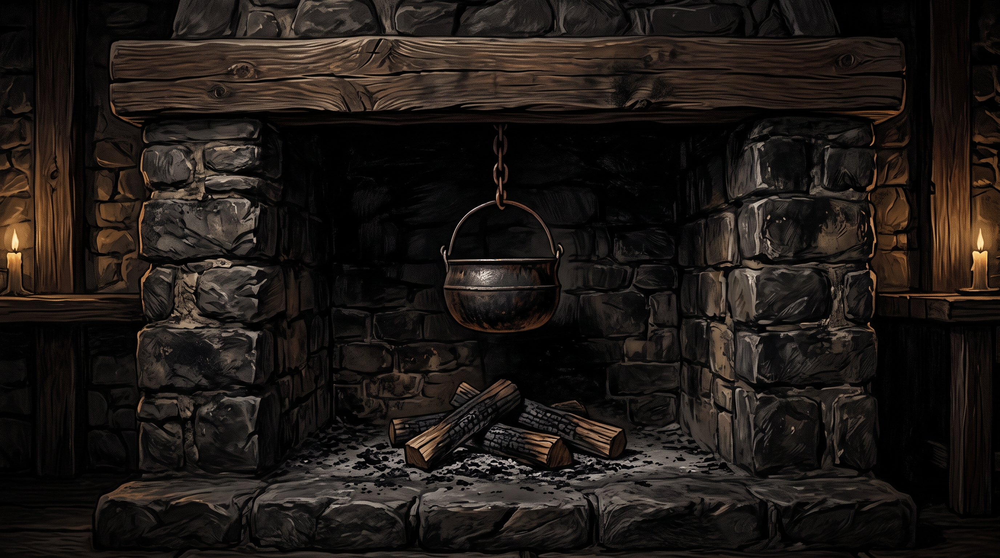

Palenisko Karczmy
Ciepły Blask
Strych: Wolny na nocleg
Piwnica: Spokojna
Szynkwas i Napitki
Nalej gościowi przed wyborem odpowiedzi
Księstwo Wiślan
Szuka: Rady i Napitku
Nastawienie:
Nieufny (50%)
Ugoszczony
Dobromir z Wiślicy
Ranny Drużynnik Kneźa • Sługa Peruna
Drzwi karczmy otwierają się z hukiem. Do środka wchodzi wsparty na włóczni woj w kolczudze zbroczonej posoką.
Twoja odpowiedź lub czyn:
Wskazówka: Nalej odpowiedni trunek, by otworzyć serce gościa.
📜 Księga Kronikarza
Zapis decyzji, plotek z traktów i wiedzy o świecie
Księstwo Wiślan
Władane przez twardego Kneźa Drogomira z grodu nad Wisłą. Czczą gromowładnego Peruna, wierzą w siłę żelaza i chcą podporządkować sobie Puszczę oraz kupieckie szlaki.
Plemiona Puszczy
Żercy Welesa, szeptuchy i łowcy z Uroczysk. Bronią świętych dębów przed toporami Wiślan i potrafią rozmawiać ze stworami lasu – Leszymi oraz Południcami.
Kupiecki Sojusz
Związek faktorii na Bursztynowym Szlaku. Cenią złote grzywny, wolny handel i najemne ostrza. Boją się, że wojna zniszczy karawany, lecz chętnie zarabiają na obu stronach.
Noc Dziadów i Żmij
Gdy krew wsiąka w rozdroża, budzą się Wąpierze, Strzygi i Morowe Panny. Tylko karczma, w której płonie święty ogień gościnności, może zatrzymać gniew bogów.